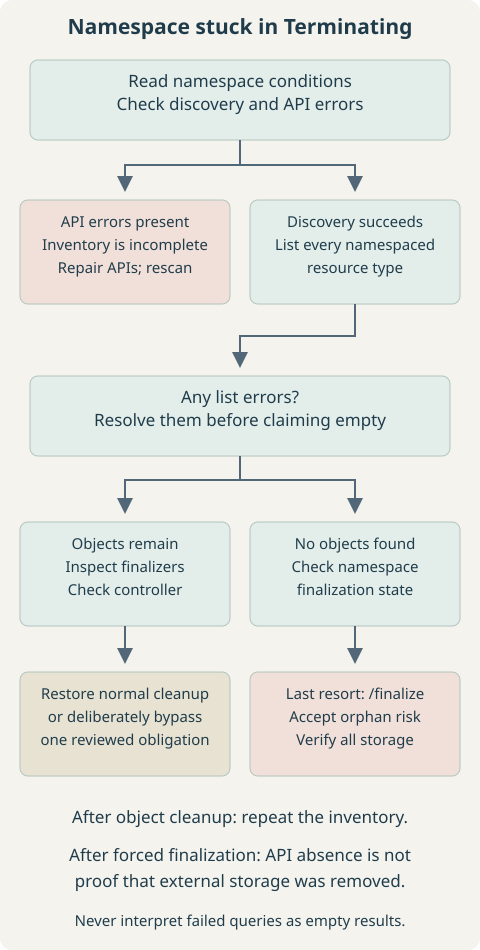
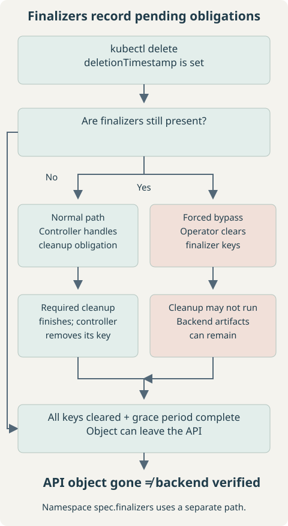
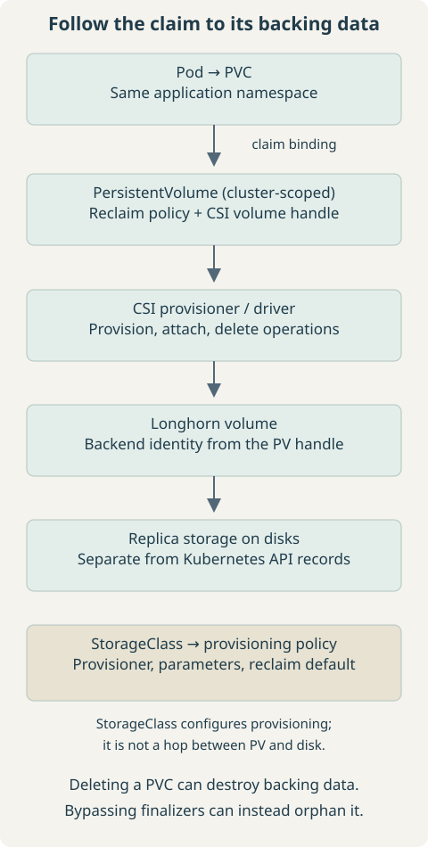

Symptoms and First Checks
Use this runbook when a namespace or PVC stays in Terminating. Start with read-only inspection. A successful delete request does not mean that controller cleanup has finished.
NAME STATUS AGE
longhorn Terminating 3dCommands run on an administrative workstation with kubectl, jq, and Bash. Replace quoted placeholders before copying. The namespace longhorn is an example; many installations use longhorn-system. Application PVCs may be in entirely different namespaces.
kubectl config current-context
kubectl get namespace longhorn
kubectl describe namespace longhornConfirm the intended cluster and namespace. The description includes conditions identifying failed discovery, remaining content, or finalizers. Do not start with --force: it does not automatically clear finalizers. Before destructive cleanup, stop dependent workloads and establish whether the data must be retained or can be destroyed.
1. Inspect the Namespace
kubectl get namespace longhorn -o yaml
kubectl get namespace longhorn -o json | jq '.spec.finalizers'
kubectl get namespace longhorn -o json | jq '{
deletionTimestamp: .metadata.deletionTimestamp,
namespaceFinalizers: .spec.finalizers,
conditions: .status.conditions
}'A timestamp means deletion has already been requested. spec.finalizers commonly contains kubernetes while the namespace controller discovers and deletes namespaced content. Read each condition’s status, reason, and message; these are more useful than the phase alone.
| Signal | Investigate |
|---|---|
NamespaceDeletionDiscoveryFailure | Unavailable API groups or discovery errors. |
NamespaceDeletionContentFailure | A failed delete, authorization issue, or webhook/controller error. |
NamespaceContentRemaining | Objects still exist; enumerate them. |
NamespaceFinalizersRemaining | Remaining objects have cleanup obligations. |
For an API discovery failure, inspect aggregated API availability:
kubectl get apiservice
kubectl describe apiservice '<api-service-name>'An Available=False service is a lead. Restore the owning extension, service endpoints, or certificates as appropriate; do not delete API registrations just to hide the error. A successful APIService check does not rule out CRD conversion or other discovery failures.
2. Find Remaining Namespaced Resources
kubectl get all does not include every resource type. This read-only scan discovers listable namespaced APIs, prints object names, and keeps errors separate. Run it in Bash:
scan_namespace() {
local namespace="${1:?namespace required}"
local resource discovered objects failed=0
if discovered=$(kubectl api-resources --verbs=list --namespaced -o name --request-timeout=15s); then
:
else
printf 'Discovery failed; any inventory below is incomplete.\n' >&2
failed=1
fi
while IFS= read -r resource; do
[ -n "$resource" ] || continue
if objects=$(kubectl get "$resource" -n "$namespace" -o name --request-timeout=15s); then
if [ -n "$objects" ]; then
printf '\n[%s]\n%s\n' "$resource" "$objects"
fi
else
printf 'FAILED to list %s; do not treat it as empty.\n' "$resource" >&2
failed=1
fi
done <<< "$discovered"
return "$failed"
}
scan_namespace longhornObject names identify what remains. No object output means only that the successfully queried types were empty. A nonzero exit status, timeout, Forbidden response, or discovery warning makes the inventory incomplete. Fix those errors and repeat before finalizing the namespace. The scan lists names rather than exporting Secret contents.


3. Understand and Inspect Resource Finalizers
kubectl get '<resource-type>' '<resource-name>' -n longhorn -o yaml
kubectl get '<resource-type>' '<resource-name>' -n longhorn -o json |
jq '{deletionTimestamp: .metadata.deletionTimestamp, finalizers: .metadata.finalizers}'Expect a deletion timestamp and one or more finalizer keys on a blocked object. A controller normally removes its key after fulfilling its cleanup contract. Removing a key manually skips that contract; it does not execute the cleanup. Once deletion starts, removing a finalizer does not undo the deletion request. See the Kubernetes finalizer reference.
metadata:
finalizers:
- kubernetes.io/pvc-protection| Field / mechanism | Meaning |
|---|---|
metadata.deletionTimestamp | Deletion requested; not a cleanup-complete marker. |
metadata.finalizers | Cleanup or protection keys on ordinary resources. |
spec.finalizers on Namespace | Namespace-specific finalization; managed through the finalize subresource. |
| PVC protection | Prevents removal while a claim is in use; it is not backend volume cleanup. |
Check the relevant controller before patching. For a custom controller, inspect its Pods, then read the selected controller’s logs:
kubectl get pods -n '<controller-namespace>'
kubectl logs -n '<controller-namespace>' '<controller-pod>' \
-c '<container-name>' --tail=100Look for failed reconciliation, missing permissions, unavailable dependencies, or webhook failures. For built-in namespace/PVC protection controllers, use control-plane diagnostics or your managed provider’s support path; they may not be visible as ordinary workload Pods.


4. Longhorn-Specific Cleanup
Prefer the official Longhorn uninstall procedure, selecting documentation and manifests for the installed version and deployment method. Keep cleanup controllers available until their work is complete. Longhorn’s uninstall confirmation setting protects against accidental data loss; intentionally enabling it permits uninstall, rather than fixing an arbitrary stuck resource.
kubectl api-resources --api-group=longhorn.io --namespaced -o name
kubectl get pods,jobs -n longhorn
kubectl get settings.longhorn.io deleting-confirmation-flag -n longhorn -o yamlThe first command lists available types, which can include volumes.longhorn.io, engines.longhorn.io, replicas.longhorn.io, and settings.longhorn.io. Their existence alone is not proof that they are blocking deletion. Use the namespace scan, then inspect the exact remaining instances and their finalizers. A missing setting or failed discovery is diagnostic evidence, not a reason to create guessed objects.
For an existing uninstall Job, inspect its status and logs:
kubectl describe job '<uninstall-job-name>' -n longhorn
kubectl logs job/'<uninstall-job-name>' -n longhorn --all-containers=true --tail=100Expect completion or a concrete failure such as an unset confirmation flag or failed API call. If the namespace is already terminating, Kubernetes normally rejects creation of new namespaced objects, including a new uninstall Job. Do not assume reinstalling into that namespace will restore cleanup. Use a version-specific recovery plan.
If a patch fails because a Longhorn admission or conversion webhook is unavailable, inspect the reported webhook and its service. Do not remove cluster-wide webhooks indiscriminately. Manual Longhorn finalizer removal is reserved here for intentional teardown where data loss and orphaned replicas are accepted. Removing CRDs first can erase access to the very records needed to reconcile storage.
5. Trace the Storage Before Deleting PVCs


Record the bound PV, its reclaim policy, and the CSI volume handle before the claim disappears. These commands inspect one claim and its associated storage:
kubectl get pvc '<pvc-name>' -n '<namespace>' -o wide
kubectl get pvc '<pvc-name>' -n '<namespace>' -o jsonpath='{.spec.volumeName}{"\n"}'
kubectl get pv '<pv-name>' -o json | jq '{
claim: .spec.claimRef, reclaimPolicy: .spec.persistentVolumeReclaimPolicy,
storageClass: .spec.storageClassName, csi: .spec.csi,
finalizers: .metadata.finalizers
}'
kubectl get storageclass '<storage-class-name>' -o yamlUse the returned PV name in the next command. An unbound claim may have no PV. The StorageClass identifies the provisioner and provisioning defaults; inspect the existing PV’s policy rather than assuming the current StorageClass value controls it. Keep the real volume handle in private incident notes, not a public post.
Delete normally asks the storage implementation to delete the backing asset when the PV is reclaimed. Retain leaves storage for deliberate recovery or disposal. PVC protection and PV/CSI deletion finalizers solve different problems. See persistent volume lifecycle and protection.
6. Delete PersistentVolumeClaims Normally
Destructive: claim deletion can cause permanent backend data deletion under a Delete reclaim policy. Stop consumers and verify any required backup or retention plan first. List the target scope, then delete one reviewed claim:
kubectl get pvc -n '<namespace>'
kubectl delete pvc '<pvc-name>' -n '<namespace>' --wait=false--wait=false returns after the request is accepted; it does not bypass protection. Follow with kubectl get pvc: the claim may disappear or remain terminating while its obligations are resolved. Omitting that option makes kubectl wait by default.
Only for an intentionally disposable namespace, this requests deletion of every PVC in that namespace:
kubectl delete pvc --all -n '<namespace>' --wait=falseExpect deletion requests for all listed claims, with the same data-loss and finalizer behavior as single-claim deletion. Do not substitute the Longhorn controller namespace for an application namespace without checking where the claims actually live.
7. PVC Stuck in Terminating
kubectl get pvc '<pvc-name>' -n '<namespace>' -o yaml
kubectl describe pvc '<pvc-name>' -n '<namespace>'If kubernetes.io/pvc-protection remains, look for Pod references before touching it. Protection is about use by Pod objects, not merely whether a process is currently reading a mounted filesystem. This query includes all Pod phases and shows deletion state:
kubectl get pods -n '<namespace>' -o json |
jq -r --arg claim '<pvc-name>' '
.items[]
| select(any(.spec.volumes[]?; .persistentVolumeClaim.claimName == $claim))
| [.metadata.name, .status.phase, (.metadata.deletionTimestamp // "not deleting")]
| @tsv'Rows identify consumers to investigate, including terminating Pods. Stop their owning workload or reconciliation loop so replacement Pods are not created, then let normal protection removal run. Empty output only establishes that this successful query found no explicit PVC references at that instant; verify detach/unmount state and controller health as well. A force-deleted Pod may have left work running on an unreachable node.
For an intentional destructive cleanup, after consumers are stopped and storage consequences are accepted, the following clears all finalizers on this one PVC:
kubectl patch pvc '<pvc-name>' -n '<namespace>' \
--type=merge -p '{"metadata": {"finalizers": []} }'
kubectl get pvc '<pvc-name>' -n '<namespace>'Expect a patch acknowledgment followed eventually by NotFound if deletion was already requested and no other blocker remains. If it was not marked for deletion, clearing finalizers alone does not delete it. Review every key first; this patch removes more than just PVC protection when other keys exist. A narrower manual alternative is:
kubectl edit pvc '<pvc-name>' -n '<namespace>'Remove only the finalizer entry whose obligation you have explicitly resolved or chosen to bypass, then save. Do not remove unrelated entries or the deletion timestamp. Neither editing nor patching proves the volume has been cleaned up.
8. Remove Finalizers From Individual Resources
If the responsible controller cannot finish and this resource is intentionally being destroyed, record its identity and cleanup obligations before applying a targeted patch. This example clears all metadata finalizers on one reviewed object:
kubectl patch '<resource-type>' '<resource-name>' -n longhorn \
--type=merge -p '{"metadata": {"finalizers": []} }'
kubectl get '<resource-type>' '<resource-name>' -n longhornA terminating object may then disappear; re-run the inventory. This affects metadata.finalizers on the object, not the namespace’s spec.finalizers. Longhorn volume, engine, and replica cleanup can be bypassed, leaving storage artifacts or losing their tracking records. Do not turn this example into a blanket patch loop across every CR or CRD.
9. Force Namespace Finalization Last
Use this only after resolving discovery failures, reviewing remaining objects, and accepting any orphaned resources. The namespace may disappear while namespaced orphan objects, cluster-scoped objects, or backend storage remain. Ordinary namespace patching does not reliably update its dedicated finalization state; use the /finalize subresource. Kubernetes documents the orphaning risk in its namespace finalization example.
Save a private copy, then generate a separate payload that changes only spec.finalizers:
kubectl get namespace longhorn -o json > longhorn-ns.json
jq '.spec.finalizers = []' longhorn-ns.json > longhorn-ns-finalize.json
jq '{name: .metadata.name, uid: .metadata.uid, spec: .spec}' longhorn-ns-finalize.jsonThe original file remains available for investigation; it is not a backup of namespace contents or storage. Check that the name is exactly the intended namespace. The relevant payload fragment is:
"spec": {
"finalizers": []
}Submit the full generated object, not just the fragment:
kubectl replace --raw "/api/v1/namespaces/longhorn/finalize" \
-f longhorn-ns-finalize.jsonExpect an API response containing the updated Namespace, then verify deletion separately. Authorization, conflicts, or other API errors are not success; resolve them and fetch a fresh object before retrying. This uses kubectl’s configured authentication without exposing credentials or starting an unauthenticated proxy.
The command below is shown for comparison, not as a finalizer fix:
kubectl delete namespace longhorn --force --grace-period=0Changing grace-period handling does not fulfill finalizer obligations. Do not interpret a “deleted” message as proof of complete storage cleanup.
10. Verify Cleanup at Every Layer
kubectl get ns longhorn
kubectl get pv
kubectl get pvc -A
kubectl get volumeattachments.storage.k8s.io
kubectl get crd -o name | grep '\.longhorn\.io$'
kubectl get storageclass,csidriver
kubectl get clusterrole,clusterrolebinding
kubectl get validatingwebhookconfiguration,mutatingwebhookconfigurationNotFound for the namespace confirms API removal only. Review PVs for retained or terminating entries, PVCs in other namespaces, and VolumeAttachments for the recorded PVs. No matching CRD output means no matching definitions were listed, provided the kubectl request succeeded; it says nothing about on-disk replicas.
For a complete Longhorn uninstall, compare cluster-scoped objects against the actual release inventory and installed-version manifests. Inspect labels, ownership, and webhook service references; names alone are insufficient to decide deletion. Do not delete shared RBAC, StorageClasses, or webhook configurations by a broad substring match.
If a Longhorn CRD is stuck terminating, inspect the definition separately:
kubectl get crd '<resource-type>.longhorn.io' -o yamlIts metadata.finalizers can reflect custom-resource deletion work. Removing them is not equivalent to clearing an individual Longhorn CR’s finalizer and can leave orphan instances. Deleting a CRD removes its API and stored custom resources; it does not guarantee external data removal. Finish by verifying volumes, attachments, replica storage, and any backup-retention obligations through the storage system’s supported tools. API absence alone is not a complete uninstall criterion.
11. Quick Command Reference
Replace placeholders and keep the scope explicit. Commands marked destructive require the checks in their linked section.
| Task | Command / section | Expected result |
|---|---|---|
| Inspect namespace | kubectl describe ns longhorn | Deletion conditions and blockers. |
| Find remaining resources | Define and run scan_namespace longhorn | Names plus visible API errors. |
| Inspect finalizers | kubectl get '<resource-type>' '<resource-name>' -n longhorn -o yaml | Timestamp and metadata keys. |
| Delete PVC — destructive | kubectl delete pvc '<pvc-name>' -n '<namespace>' --wait=false | Deletion requested; may remain terminating. |
| Remove PVC finalizers — destructive | Reviewed PVC patch or edit | Protection bypassed, not storage cleanup. |
| Remove resource finalizers — destructive | Single-resource metadata patch | Chosen obligations bypassed. |
| Finalize namespace — destructive | Prepare JSON and PUT through /finalize | Namespace finalization state updated. |
| Verify cleanup | kubectl get ns longhorn; kubectl get pv; kubectl get pvc -A | Check API objects, then backend storage. |
The useful stopping condition is not merely “the namespace vanished.” It is that the intended resources are gone, required data is preserved or deliberately destroyed, and no unexplained storage or controller obligations remain.